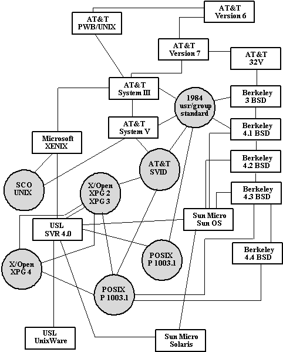

В начале 1983 года компания American Telephone and Telegraph Bell Laboratories (AT&T Bell Labs) объявила о выпуске UNIX System V. Впервые в истории Bell Labs было также объявлено, что AT&T будет поддерживать этот и все будущие выпуски System V. Кроме того, была обещана совместимость выпущенной версии System V со всеми будущими версиями. ОС UNIX System V включала много новых возможностей, но почти все они относились к повышению производительности (хеш-таблицы и кэширование данных). На самом деле UNIX System V являлась развитым вариантом UNIX System III. К наиболее важным оригинальным особенностям UNIX System V относится появление семафоров, очередей сообщений и разделяемой памяти.
В 1984 году USG была преобразована в Лабораторию по развитию системы UNIX (UNIX System Development Laboratories - USDL). В 1984 году USDL выпустила UNIX System V Release 2 (SVR2). В этом варианте системы появились возможности блокировок файлов и записей, копирования совместно используемых страниц оперативной памяти при попытке записи (copy-on-write), страничного замещения оперативной памяти (реализованного не так, как в BSD) и т.д. К этому времени ОС UNIX была установлена на более чем 100000 компьютеров.
В 1987 году подразделение USDL объявило о выпуске UNIX System V Release 3 (SVR3). В этой системе появились полные возможности межпроцессных взаимодействий, разделения удаленных файлов (Remote File Sharing - RFS), развитые операции обработки сигналов, разделяемые библиотеки и т.д. Кроме того, были обеспечены новые возможности по повышению производительности и безопасности системы. К концу 1987 года появилось более 750000 установок ОС UNIX, и было зарегистрировано 4,5 млн. пользователей.
На этом мы заканчиваем исторический обзор ОС UNIX, поскольку вплотную подошли к современному состоянию системы. Продолжим этот разговор в конце курса, а пока ограничимся таблицей 1.1 и рисунком генеалогического дерева ОС UNIX (заметим, что по поводу генеалогии существуют разные мнения).
Таблица 1.1.
Характерные свойства версий AT&T UNIX начиная с 1982 года
| 1982 System III | Именованные программные каналы
|
| | Очереди запуска
|
| 1983 System V | Хеш-таблицы
|
| | Кэши буферов и inodes
|
| | Семафоры
|
| | Разделяемая память
|
| | Очереди сообщений
|
| 1984 SVR2 | Блокирование записей и файлов
|
| | Подкачка по требованию
|
| | Копирование по записи
|
| 1987 SVR3 | Межпроцессные взаимодействия (IPC)
|
| | Разделение удаленных файлов (RFS)
|
| | Развитые операции обработки сигналов
|
| | Разделяемые библиотеки
|
| | Переключатель файловых систем (FSS)
|
| | Интерфейс транспортного уровня (TLI)
|
| | Возможности коммуникаций на основе потоков
|
| 1989 SVR4 | Поддержка обработки в реальном времени
|
| | Классы планирования процессов
|
| | Динамически выделяемые структуры данных
|
| | Развитые возможности открытия файлов
|
| | Управление виртуальной памятью (VM)
|
| | Возможности виртуальной файловой системы (VFS)
|
| | Быстрая файловая система (BSD)
|
| | Развитые возможности потоков
|
| | Прерываемое ядро
|
| | Квоты файловых систем
|
| | Интерфейс драйвера с ядром системы
|

Рис. 1.1. Генеалогическое дерево ОС UNIX
Предыдущая глава | Оглавление | Следующая глава
Comments: [email protected]
Copyright © CIT